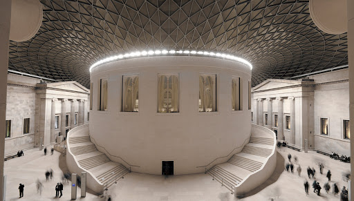
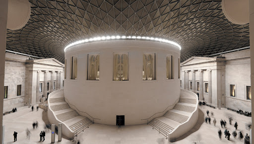
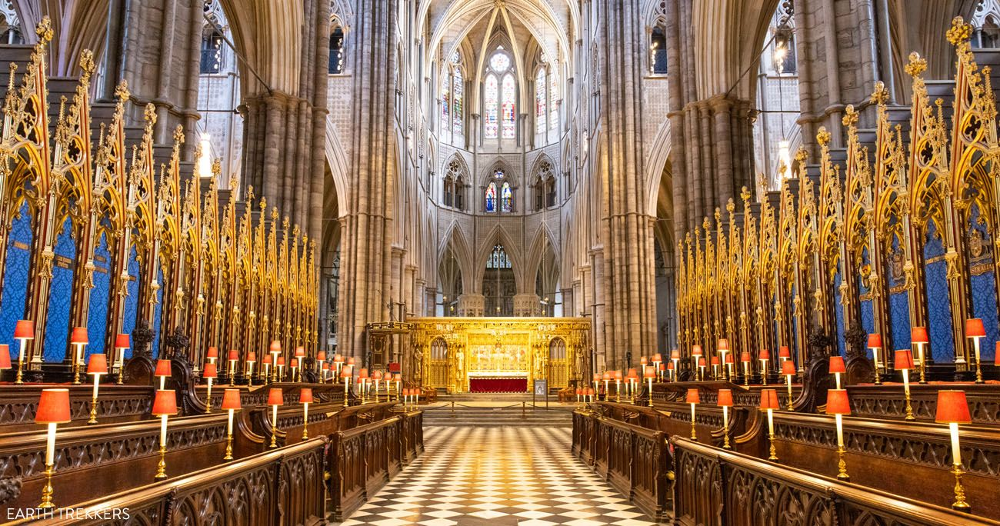
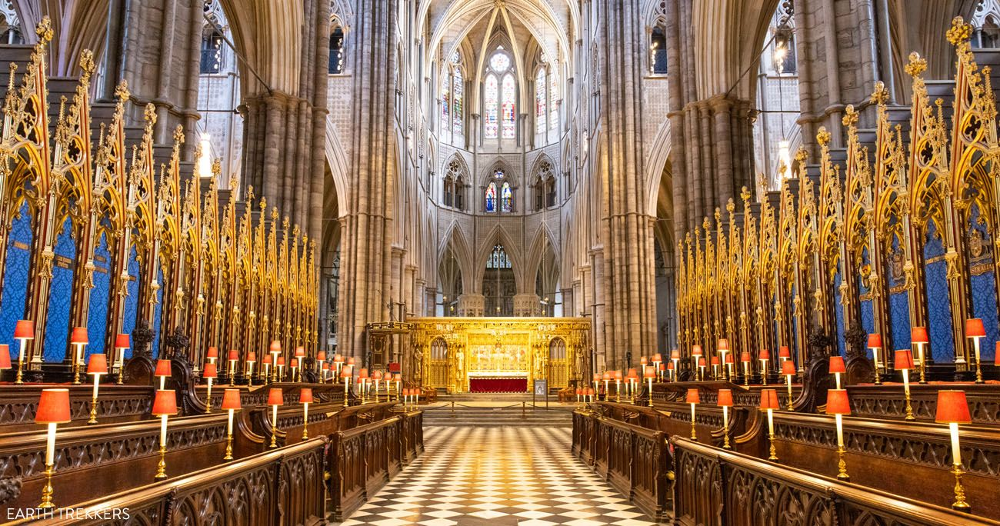
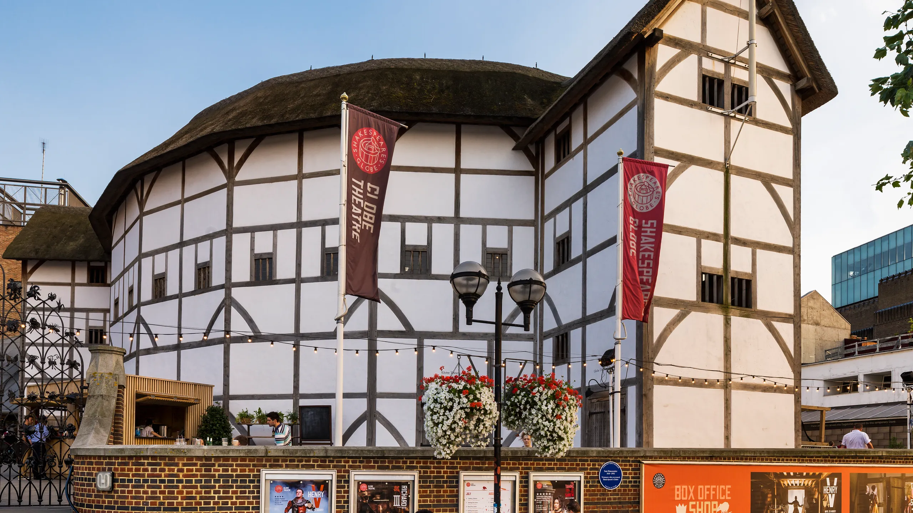
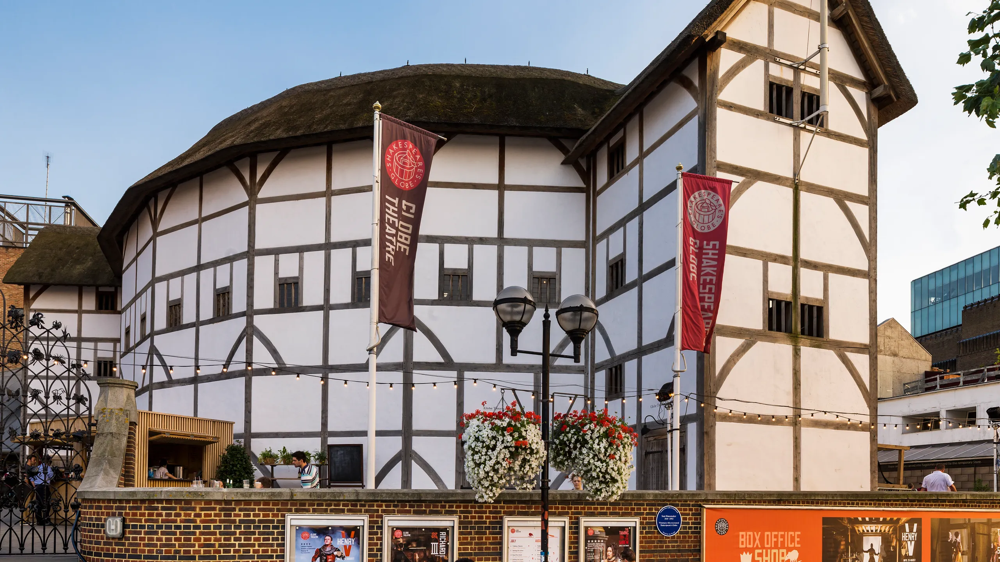

Londres, capitale de l’Angleterre et du Royaume-Uni, est située sur les rives de la Tamise, dans le sud-est du pays. C’est certainement l’une des plus belles villes du monde. Pourquoi choisir Londres ? Parce qu’elle a tout pour elle : c’est une ville très intéressante, tant sur le plan historique qu’artistique.Découvrez les histoires qui se cachent derrière ces structures emblématiques et plongez-vous dans la culture vibrante de cette magnifique ville. Dans ce blog, nous vous emmènerons faire un voyage pour explorer certains des monuments et emblèmes les plus importants lors d'une visite guidée à pied de Londres. Nous examinerons leur histoire, leur importance et les expériences uniques qu'ils offrent aux visiteurs. Que vous soyez un touriste débutant ou un voyageur chevronné, ce blog vous aidera à découvrir le meilleur de ce que Londres a à offrir. Commençons notre visite des principaux monuments et emblèmes de Londres !
 

Le British Museum (en français « Musée britannique », appellation couramment utilisée jusqu'au xxe siècle, mais devenue rare), est un musée de l'histoire et de la culture humaine, situé dans le quartier de Bloomsbury à Londres, au Royaume-Uni. Ses collections, constituées de plus de sept millions d’objets, sont parmi les plus importantes du monde et proviennent de tous les continents. Elles illustrent l’histoire humaine de ses débuts à aujourd'hui. Le musée a été fondé en 1753 et ouvert au public en 1759. Son statut actuel de non-departmental public body lui permet d’être financé par le département de la Culture, des Médias et du Sport. Le British Museum compte six millions de visiteurs par an et s'affiche comme le site touristique le plus fréquenté de Grande-Bretagne. Comme dans la plupart des musées et galeries d’art du Royaume-Uni, l’entrée est gratuite, à l’exception de certaines expositions temporaires ; les dons sont encouragés.Vous pourrez aussi y voir des momies et des sarcophages, des fresques, des masques aztèques, un crâne de cristal, des pièces en ivoire de morse du 12e siècle, des œuvres d’art bouddhique coréenne et tibétaine, des sculptures indiennes, des porcelaines chinoises…
Big Ben. La tour de l'horloge, officiellement connue sous le nom de tour Elizabeth, est située à l'extrémité nord du Palais de Westminster. Big Ben, la tour d'horloge emblématique située à l'extrémité nord du Palais de Westminster, est l'un des monuments les plus reconnaissables de Londres. La tour est nommée d'après Sir Benjamin Hall, l'homme responsable de sa construction. Bien que beaucoup de gens pensent que le nom "Big Ben" se réfère à l'horloge ou à la tour elle-même, il fait en réalité référence à la cloche à l'intérieur de la tour. La cloche, qui pèse plus de 13 tonnes, a été coulée en 1858 par la fonderie de cloches de Whitechapel, la même entreprise qui a coulé la Liberty Bell à Philadelphie. Il a fallu 16 heures pour hisser la cloche au sommet de la tour, où elle sonne depuis plus de 160 ans. La tour de l'horloge elle-même est un exploit impressionnant de l'ingénierie victorienne. Elle s'élève à une hauteur de 96 mètres et compte un total de 334 marches qui mènent au sommet. Le cadran de l'horloge a un diamètre de plus de 7 mètres et est composé de 312 pièces de verre opale. Le mécanisme de l'horloge, situé à la base de la tour, est alimenté par des poids et un pendule.Big Ben a joué un rôle important dans l'histoire de Londres. Pendant la Seconde Guerre mondiale, la tour de l'horloge est restée intacte malgré les bombardements des environs. Elle a également été le point focal de nombreuses célébrations, comme les feux d'artifice du Nouvel An et l'ouverture des Jeux olympiques de 2012. Aujourd'hui, les visiteurs peuvent visiter la tour, ce qui inclut une visite de la salle de l'horloge et une montée au sommet de la tour pour une vue imprenable sur Londres. Bien que la tour soit actuellement en cours de rénovation, la cloche continue de sonner chaque heure, un son devenu synonyme de Londres elle-même.
Construit en 1703 pour le Duc de Buckingham, l'édifice a été acquis par le roi George III en 1762 pour en faire sa résidence privée. Depuis sa construction, le palais a connu de nombreux aménagements et extensions à plusieurs occasions. Le palais a remarquablement survécu aux deux geurres mondiales. Durant la Première Guerre Mondiale, l'édifice a eu la chance de ne pas être attaqué, tandis qu'il a été bombardé à plusieurs reprises pendant la Seconde Guerre Mondiale. Le bombardement le plus important a détruit la chapelle royale en 1940. Le palais de Buckingham est célèbre pour être la résidence officielle du monarque du Royaume-Uni. Il abrite la royauté britannique depuis 1837 et présente une architecture grandiose ainsi qu'une vaste collection d'œuvres d'art.Les visites sont permises uniquement durant quelques semaines par an, entre les mois d'août et septembre. Il existe deux types d'entrées différentes : la première permet de visiter les Appartements d'Etat, tandis que la seconde inclut en plus les Écuries Royales et la Galerie de la Reine. Indépendamment des visites à l'intérieur du palais, il est possible d'assister à la Relève de la Garde tout au long de l'année. Cette attraction touristique peut attirer des milliers de visiteurs.
 

L'abbaye de Westminster est une église historique et emblématique au cœur de Londres, en Angleterre. Fondée au Xe siècle, l'abbaye a joué un rôle important dans l'histoire britannique, servant de lieu de couronnements, de mariages royaux et de dernier lieu de repos de nombreuses personnalités remarquables tout au long de l'histoire. L'extérieur de l'abbaye présente une architecture gothique complexe, comprenant des arcs en ogive et des tours imposantes qui s'élèvent vers le ciel. Les visiteurs peuvent entrer dans l'église par la grande entrée ouest, qui mène à la nef, ou allée centrale, de l'abbaye. La nef est bordée d'impressionnantes colonnes et de magnifiques vitraux qui représentent des scènes de la Bible et de l'histoire de l'abbaye. L'une des zones les plus célèbres de l'abbaye est le Coin des poètes, qui contient les tombes et les mémoriaux de nombreux poètes, dramaturges et auteurs célèbres. Dans l'ensemble, Westminster Abbey est une destination incontournable pour tous ceux qui s'intéressent à l'histoire, à l'architecture ou à la religion. L'histoire riche de l'église et son architecture impressionnante, combinées à son importance dans la culture et la tradition britanniques, en font une destination vraiment unique et impressionnante.
La grande roue a été officiellement inaugurée par le Premier ministre britannique Tony Blair le 31 décembre 1999, mais n'a pas été ouverte au public avant le 9 mars 2000. Le London Eye est l'attraction payante la plus populaire de la capitale, avec près de 4 millions de visiteurs chaque année. The London Eye offre des vues panoramiques tout à fait impressionnantes, aussi bien sur la ville que sur la campagne. Dans les premiers temps, le London Eye s’est appelé Millenium Wheel, avant de devenir le London Eye, en 2011. Les jours où le ciel est dégagé, il est possible de voir jusqu'à 40 kilomètres à la ronde. Toutefois, si la luminosité est trop forte, cela peut empêcher de voir certaines parties de la ville. Le London Eye est situé sur la rive sud de la Tamise à côté du Sea Life London Aquarium et pas très loin de Big Ben , vous ne pouvez pas la manquer. Les capsules du London Eye ne sont pas seulement destinées au tourisme. En fait, vous pouvez y pratiquer toutes sortes d’activités : dégustation de vins, de chocolat ou de champagne. La nuit, c'est le meilleur endroit pour profiter de la vue avec l'être cher.
 

Situé dans le quartier londonien de Bankside, le Shakespeare's Globe Theatre reconstitue le théâtre en plein air où le dramaturge a écrit ses plus grandes œuvres. Le théâtre est depuis longtemps un élément important de la société, offrant un moyen d'expression artistique, de communication et de divertissement. Depuis des siècles, il sert à raconter des histoires, à transmettre des messages et à rassembler les gens. Le Shakespeare's Globe Theatre est une réplique fidèle du théâtre construit en 1599, où Shakespeare a présenté ses œuvres les plus célèbres. Pour ceux qui visitent Londres entre les mois de mai et d'octobre, cela peut être l'occasion d'assister à l'une des représentations théâtrales pour profiter des installations d'une manière plus vivante et divertissante.
La Tamise est l'un des monuments les plus emblématiques et célèbres de Londres, en Angleterre. Cette rivière est la deuxième plus longue du Royaume-Uni et s'étend sur plus de 215 miles de sa source dans les Cotswold Hills à son estuaire dans la mer du Nord. La Tamise fait partie intégrante de l'histoire de Londres, et ses rives sont bordées de certains des monuments les plus célèbres de la ville, notamment le Tower Bridge, les Houses of Parliament, le London Eye et le Globe Theatre. La rivière est également un endroit populaire pour les activités de loisirs, de nombreuses personnes appréciant les croisières en bateau, les visites en bateau et les promenades tranquilles le long de ses rives. La Tamise accueille également une variété d'événements tout au long de l'année, notamment la célèbre course de bateaux Oxford-Cambridge et le Festival de la Tamise.
Tower Bridge est l'un des monuments les plus reconnaissables de Londres, et il est facile de comprendre pourquoi. Cette structure emblématique est un véritable chef-d'œuvre de l'ingénierie et du design victorien, et elle témoigne de l'ingéniosité et de la créativité de ses constructeurs. Le pont, qui enjambe la Tamise, a été conçu par Sir Horace Jones et a été inauguré en 1894. Que vous soyez un passionné d'histoire, un enthousiaste de l'ingénierie ou simplement un amateur de monuments emblématiques, Tower Bridge est une attraction incontournable à Londres. Son design unique, son ingénierie et son histoire en font l'un des monuments les plus fascinants et les plus aimés de la ville.